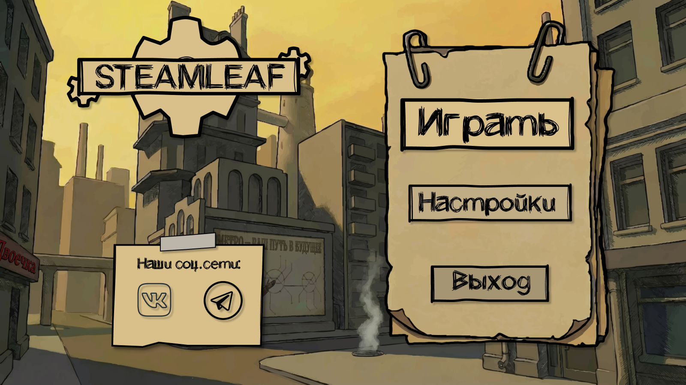

Steamleaf — 2D-симулятор уличного промоутера на Unity + C#, созданный для освоения основ геймдева.
Главная цель — разработать небольшую, но полноценную игру с нуля: со своим городом, живыми персонажами, игровым циклом и нарративом. Тема — работа промоутером в туманном городе.

Игрок подходит к прохожим и инициирует взаимодействие. Каждый NPC имеет свою вероятность принять листовку в зависимости от типа и репутации игрока.
За каждую принятую листовку начисляются деньги. Репутация растёт от выполнения заданий NPC и падает от грубости или провалов.
Город живёт по суточному циклу: днём улицы многолюдны, ночью — опасны и пусты. NPC меняют поведение в зависимости от времени.
Жители дают небольшие квесты: доставить листовку конкретному человеку, распространить информацию в районе, найти кого-то в городе.
Игра написана на C# в Unity. Проект разбит на скрипты по зонам ответственности: управление игроком, логика NPC, игровые системы (деньги, репутация, время) и UI.
Scripts/
├── Player/
│ ├── PlayerController.cs # движение и анимация
│ └── PlayerStats.cs # деньги, репутация, усталость
├── NPC/
│ ├── NPCBehaviour.cs # состояния и маршруты
│ └── NPCDialogue.cs # диалоги и задания
├── Systems/
│ ├── DayNightCycle.cs # смена времени суток
│ ├── QuestSystem.cs # система заданий
│ └── EconomySystem.cs # деньги и репутация
└── UI/
└── UIManager.cs # HUD, меню, диалоги
Механика проста для реализации, но богата на нюансы: поведение толпы, репутация, смена времени суток, нарративные задания — всё это интересные задачи для начинающего разработчика. Тема позволяет сосредоточиться на игровом дизайне и атмосфере, не перегружая проект сложной физикой или боевой системой.